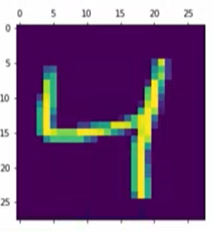
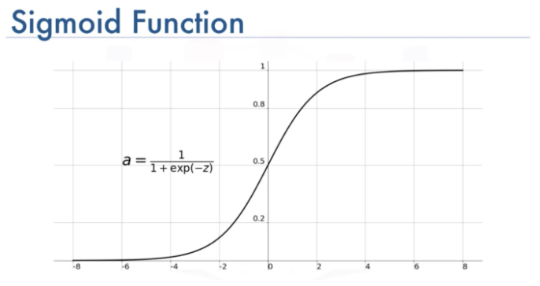
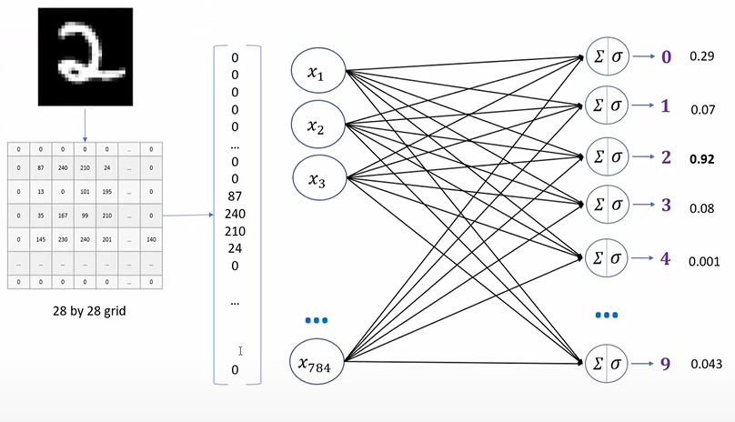
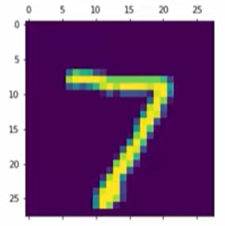
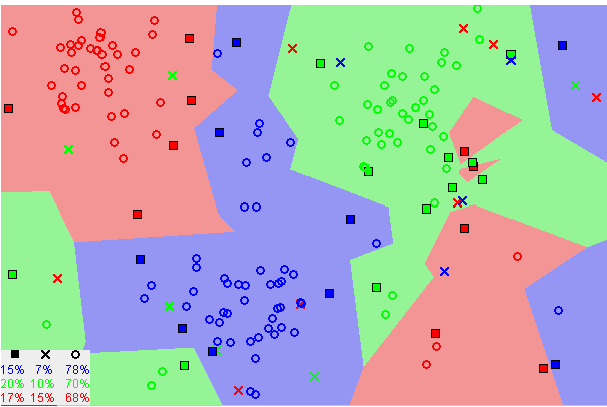

These are numbers from 0 to 9. They are sloppily written and rendered at an extremly low resolution of 28 by 28 pixels. But your brain has no trouble recognizing them and I want you to take a moment to appreciate how crazy it is that brains can do this so effortlessly! For images labeled as 3, eventhough the specific values of each pixel is very different from one image to the next. The particular light-sensitive cells in your eye that are firing when you see the 3 at the first column are very different from the 3s firing at third column. But something in that crazy smart visual cortex of yours resolves these as representing the same idea while at the same time recognizing other images as their own distinct ideas. However, for computers to take in a grid of 28 by 28 pixels like these and outputs a single number between 0 and 9 telling you what it think the digit is, the task goes from comically trivial and dauntingly difficult. Unless you have been living under a rock, it is unnecessary to motivate the relevance and importance of machine learning algorithms to the present into the future.
Today we are going to explore two popular learning algorithms on this particular task, to see how computers can classify handwritten digits not quite but almost as accurate as human eyes. In this tutorial, dataset from Modified National Institute of Standards and Technology database (MNIST) will be used, it is the most popular dataset among machine learning, images in the form of 28*28 gray scale intensities of images representing an image along with the first column to be a label (0 to 9) for every image. Also, python libraries already contain this specific dataset, so it can be easily imported and start working with it.
For data learning models, seperating data into training and testing sets is an important part of evalutaing the model performance. After a model has been processed by using the training set, you test the model by making predictions against the test set. Because the data in the testing set already contains known values for the attribute that you want to predict, it is easy to determine whether the model's guesses are correct.
MNIST is divided into two datasets: the training set has 60,000 examples of hand-written numerals, and the test set has 10,000. MNIST is a subset of a larger dataset available at the National Institute of Standards and Technology. All of its images are the same size, and within them, the digits are centered and size normalized.
MNIST dataset has is known as “Hello world” of Image classification. Every Machine Learning Engineer tackles this dataset sooner or later.
Open a python script where I have imported some necessary modules such as tensorflow, and from tensorflow I also imported keras which contains some convenient api to use handwritten dataset from keras libary.
import tensorflow as tf
from tensorflow import keras
import matplotlib.pyplot as plt
%matplotlib inline
import numpy as np
MNIST images can be load using the first line, and what this will do it it will load the train and test digits dataset into X_train, y_train, X_test, y_test. Where X contains the actual digits images, and y contains the label classification of each corresponding images.
Let's see how many samples we have. In X_train, we have 60,000 digits images, similarly in X_test we have 10,000 images. Now if you look at each individual sample that sample is a 28 by 28 pixel image and the weight represented in number is a simple two dimensional array.
(X_train, y_train), (X_text, y_test) = keras.datasets.mnist.load_data()
len(X_train)
len(X_test)
X_train[0].shape
Output:
60000
10000
(28, 28)
If you want to see how the images looks visually, you can use matplotlib library to plot the third training image (at index 2). Similarly, you can visuallize all the images by their indexes.
plt.matshow(X_train[2])
Output:

Your brain can easily recognize the third position is 4, now on the third position of y_train, we can see the image is classifies as 4, that is how computers will know if they classified the image into the correct
If you look at y_train overall, it is containing a number between 0 to 9. The second line print the first 5 symbol and this is how it looks as python array.
y_train[2]
y_train[:5]
Output:
4
array([5, 0, 4, 1, 9], dtype=unit8)
Neural Network
Based on nature, neural networks are the usual representation we make of the brain : neurons interconnected to other neurons which forms a network.
In terms of artificial neural networks, the network itself are put on layers, as shown below. A network have input layer, output layers, and may have many layers in between as hidden layers.
A neuron (node) of the layer n can only be connected to neurons from layers n-1 and n+1. Each neurons recieve information from the last layer and send information to the next layer via activation functions
The activation function usually serves to turn the total value calculated before to a number between 0 and 1
 Sigmoid function visualization (Image by Toprak)In each layer, neurons take all values from connected neurons multiplied by their respective weight, add them, and apply an activation function. Then, the neuron is ready to send its new value to other neurons. Passing to the final layer, neurons outputs into classifications by the last value obtained by the network.
We are going to flatten our dataset because we saw the presentation that we want to convert the 28 by 28 pixel image into a single dimensional array that will have 784 elements in the code block below.
X_train = X_train / 255
X_test = X_test / 255
X_train_flattened = X_train.reshape(len(X_train), 28*28)
X_test_flattened = X_test.reshape(len(X_train), 28*28)
We are going to create a simple neural network of input layer of 784 elements, and output layer with 10 elements. The way to create this in tensorflow is to use keras squential. Sequantial means having a stack of layers in my neural netwokr and since it is a stack it will accept every layer as one element. In keras.layers.Dense, you can define both input and output layers, dense means every neurons in one layer are connected with every other neuron in the second layer. Creating a dense layer as below with input layer 784 as shape, and output shape of 10.
In simple neural network, there is no hidden layers, you need to specify the activation function which is sigmoid for the last layer.
After defning the neural network model, we need to compile it so in tensorflow and pass bunch of arguments. In this particular example, I am using 'adam' optimizer which let the model train efficiently when the backward propagation and training is going on. Having an optimizer will allow you to reach to global optima in efficient way.
Loss functions calculate crossentropy to show how the algorithm fit data in the first place. Tensorflow provides various loss function for training models
here.
I choose to use 'sparse_categorical_crossentropy' for loss function is because it is for computing the crossentripy loss between labels and predictions.
model = keras.Squential([
keras.layers.Dense(10, input_shape(784,),actvation='sigmoid')
])
model.compile(
optimizer='adam',
loss='sparse_categorical_crossentropy'
metrics=['accuracy']
)
model.fit(X_train_flattened, y_train, epochs=5)
Output:
Epoch 1/5
3s 2ms/step - loss: 0.4830 - accuracy: 0.8767
Epoch 2/5
4s 2ms/step - loss: 0.3057 - accuracy: 0.9154
Epoch 3/5
4s 2ms/step - loss: 0.2857 - accuracy: 0.9212
Epoch 4/5
4s 2ms/step - loss: 0.2751 - accuracy: 0.9237
Epoch 5/5
4s 2ms/step - loss: 0.2682 - accuracy: 0.9260
Now that the model finished training, before deploying a model to production, it is always necessary to evaluate the accuracy on a test dataset.
For sample predictions, the first images on X_test is 7 recognized by human brain. Using the neural network model on the first image of testing set, the output is 7 as expected.
plt.matshow(X_test[0])
Output:

y_predicted = model.predict(X_test_flattened)
np.argmax(y_predicted)
Output:
7
The simple neural network model looks pretty good with 92.68% accuracy on the testing dataset, and it takes less time for training.
model.evaluate(X_test_flattned, y_test)
Output:
accuracy: 0.9268
Rectified Linear Unit (relu) is one of the most commonly used activation function in deep learning. The function returns 0 if the input is negative, but for any positive input, it returns that value back. Increasing the number of hidden layers might improve the accuracy or might not, it really depends on the complexity of the problem that you are trying to solve. In this case, adding one more hidden layer with rectified linear unit activation function increaces the training accuracy, but also more time consuming as it takes longer time per step while learning.
model = keras.Squential([
keras.layers.Dense(100, input_shape(784,),actvation='relu')
keras.layers.Dense(10, actvation='sigmoid')
])
model.compile(
optimizer='adam',
loss='sparse_categorical_crossentropy'
metrics=['accuracy']
)
model.fit(X_train_flattened, y_train, epochs=5)
Output:
Epoch 1/5
5s 3ms/step - loss: 0.2874 - accuracy: 0.9198
Epoch 2/5
5s 2ms/step - loss: 0.1339 - accuracy: 0.9606
Epoch 3/5
5s 2ms/step - loss: 0.0956 - accuracy: 0.9717
Epoch 4/5
5s 3ms/step - loss: 0.0738 - accuracy: 0.9776
Epoch 5/5
5s 3ms/step - loss: 0.0586 - accuracy: 0.9819
K-nearest Neighbors(KNN)
Similar data points typically exist close to each other, the kNN algorithm hinges on this assumption being true enough for the algorithm to be useful. kNN captures the idea of similarity using Euclidean distance between the image pixels for handwritten recognition.
 K-nearest neighbors visualization (Image by Harrison)First, compute the Euclidean distance between the test data point and all the training data.
Euclidean distance is the square root of the sum of squared distance between two points.
The Euclidean _distance function calculates the difference between the squares of the points and finally the square root of the difference .
def Euclidean_distance(row1, row2):
distance = 0
for i in range(len(row1)-1):
distance += (row1[i] - row2[i])**2
return sqrt(distance)
Sort the calculated distances in ascending order. And find the k neighbors with the cloest distance, the image will be classified by majority rule of its neighbors' labels
In order to find the neighbors we need to first sort the distance in ascending order, np.argsort() is used to find the index of minimum distance .
def Get_neighbors(train, test_row, k):
distance = list()
data = []
for i in train:
dist = Euclidean_distance(test_row, i)
distance.append(dist)
data.append(i)
distance = np.array(distance)
data = np.array(data)
#finding the index of minimum distance
index_dist = distance.argsort()
#arranging data
data = data[index_dist]
#slicing k value
neighbors = data[:k]
return neighbors
In this particular implementation, if k=4, for a image whose 4 neighbors are 8, 6, 5, 5 accordingly, the algorithm will output 5 as its classification
def predict(train, test_row, k):
neighbors = Get_Neighbors(train, test_row, k)
classes = []
for i in neighbors:
classes.append(i[-1])
prediction = max(classes, key= classes.count)
return prediction
Accuracy is calculated by dividing the correctly classified samples count by total samples.
def accuracy(y_true, y_pred):
n_correct = 0
for i in range(len(y_true)):
if y_true[i] == y_pred[i]:
n_correct += 1
acc = n_correct/len(y_true)
return acc
After we have training and testing dataset already imported, storing true values and predicted values Use accuracy function above to calculate the accuracy score.
92.9% of the images is classied corretly to the true label using kNN with 4 nearest neighbors.
y_pred=[]
for i in range(len(X_train)):
prediction = predict(X_test, X_test[i], 4)
y_pred.append(prediction)
# Accuracy
accuracy(y_test, y_pred)
Output:
accuracy: 0.929
As we decrease the value of K to 1, our predictions become less stable. Inversely, as we increase the value of K, our predictions become more stable due to majority voting/averaging, and thus, more likely to make more accurate predictions (up to a certain point). However, it may takes more predicting time as the algorithm will be examing more neighbors for each image.
Notes: In the general case of classification and regression, it is important to find the right K for learning data by trying several k-values and picking the one that works best.
kNN vs Neural Network
- k-NN requires no training time, whereas training neural networks is rather time-intensive. However k-NN will probably take much longer at evaluation time, especially if you have many data points and don’t resort to approximate search.
- k-NN is very simple and requires tuning only one hyperparameter (the value of k), while neural net training involves many hyperparameters controlling the size and structure of the network and the optimization procedure.
- Neural networks have achieved the state of the art in more domains than k-NN. (This doesn’t necessarily mean neural networks will work better on your particular problem, but empirically neural networks are effective in many settings.) There are more theoretical guarantees for k-NN than for neural nets, although as we know there is a large gap between the theoretical and empirical performance of neural networks. (Aside: it is a good idea to carefully examine the assumptions made by theoretical work in machine learning, to make sure that they are reasonable for the problem being approached.)
- Once a neural network is trained, the training data is no longer needed to produce new predictions. This is obviously not the case with k-NN.
- Once a neural network is trained on one task, its parameters can be used as a good initializer for another (similar) task. This is a form of transfer learning that cannot be achieved with k-NN.
Conclusion
k-NN is simpler than neural nets. Only one hyperparameter (k) is searched while neural net can have millions hyperparameters while neural network is likely a blackbox, it’s not easy to track the behavior inside each layer while the theory of k-NN is clearly defined.
Each machine learning algorithm has a different inductive bias, so it's not always appropriate to use the same method over the others.
Both algorithms performed similar with the default hyperparameters (4 nearest neighbors, and 0 hidden layer neural net). However, by adding one hidden layer with relu activation, more promissing training accruacy are shown. Therefore, in this particular example of handwritten digit recognition, neural network with one additional layer performs better.